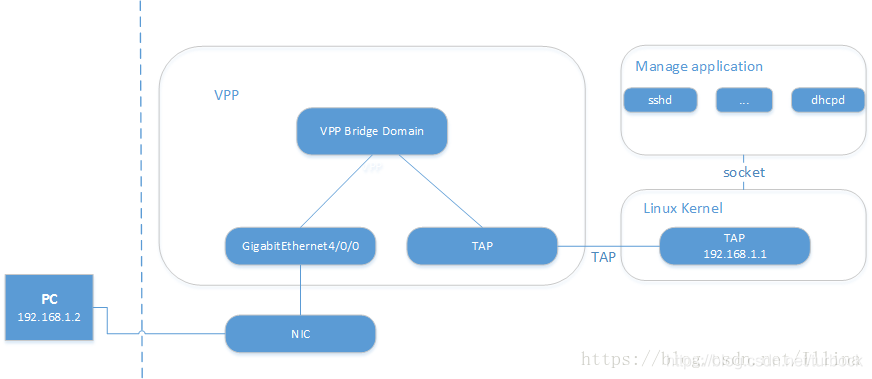

6. VPP_kernel_interaction
date: 2023-02-05
VPP和Linux内核协议栈通信方法
https://blog.csdn.net/turbock/article/details/103912015

10.1.5.153
2: ens3: <BROADCAST,MULTICAST,UP,LOWER_UP> mtu 1500 qdisc mq state UP group default qlen 1000
link/ether 52:54:00:f8:00:83 brd ff:ff:ff:ff:ff:ff
altname enp0s3
inet 10.1.5.153/21 brd 10.1.7.255 scope global ens3
valid_lft forever preferred_lft forever
inet6 fe80::5054:ff:fef8:83/64 scope link
valid_lft forever preferred_lft forever
3: ens4: <BROADCAST,MULTICAST> mtu 1500 qdisc noop state DOWN group default qlen 1000
link/ether 52:54:00:0d:bb:f4 brd ff:ff:ff:ff:ff:ff
altname enp0s4
4: ens5: <BROADCAST,MULTICAST> mtu 1500 qdisc noop state DOWN group default qlen 1000
link/ether 52:54:00:94:18:27 brd ff:ff:ff:ff:ff:ff
altname enp0s5
ip l s ens3 down
systemctl start vpp
# vpp纳管ens4
ip a
2: ens3: <BROADCAST,MULTICAST> mtu 1500 qdisc mq state DOWN group default qlen 1000
link/ether 52:54:00:f8:00:83 brd ff:ff:ff:ff:ff:ff
altname enp0s3
4: ens5: <BROADCAST,MULTICAST> mtu 1500 qdisc noop state DOWN group default qlen 1000
link/ether 52:54:00:94:18:27 brd ff:ff:ff:ff:ff:ff
altname enp0s5
vppctl
#创建tap0网卡
create tap ?
create tap host-ip4-addr 10.1.5.153/21 host-ip4-gw 10.1.1.1 host-mac-addr 52:54:00:0d:bb:f4 host-if-name ens4
#将网络接口tap0和g0绑定到网桥1上,并启动。可以不设ip
set int l2 bridge tap0 1
set int l2 bridge GigabitEthernet0/4/0 1
set int state GigabitEthernet0/4/0 up
set int state tap0 up
ip a a 10.1.5.153/21 dev ens4
# FROM other VM
ping OK
ssh 10.1.1.5.153 --> OK
ip netns add ns0
ip link add vpp0 type veth peer name vethns0
ip link set vethns0 netns ns0
ip netns exec ns0 ip link set lo up
ip netns exec ns0 ip link set vethns0 up
ip netns exec ns0 ip addr add 192.168.1.1/24 dev vethns0
ip netns exec ns0 ethtool -K vethns0 rx off tx off
vpp# set int l2 bridge GigabitEthernet4/0/0 1
vpp# set int state GigabitEthernet4/0/0 up
vpp# create host-interface name vpp0
vpp# set interface state host-vpp0 up
vpp# set interface l2 bridge host-vpp0 1